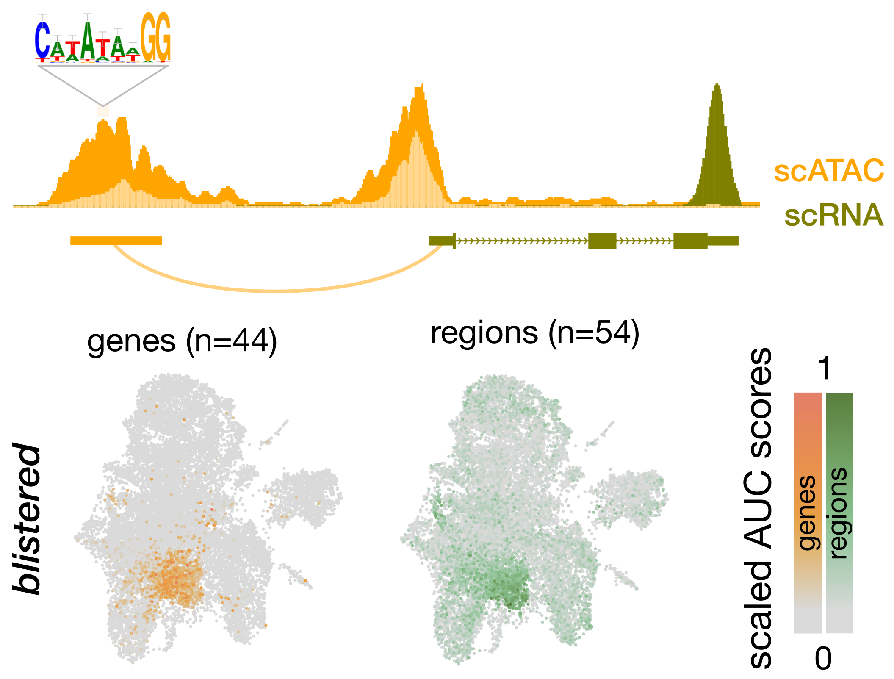

Projets de recherche
Vous trouverez ici un résumé pour chacun de mes projets de recherche effectués lors de ma thèse et de mon post-doc entre 2016 et 2022.
Modélisation booléenne
Dans le contexte du développement embryonnaire de l’oursin, j’ai cherché à mieux comprendre les intéractions entre différentes voies de signalisation.
Pour cela, j’ai construit un modèle logique incoporant les principaux régulateurs de l’axe dorso-ventral et leurs actions de régulation extraites depuis la littérature (e.g. activation, inhibition).
J’ai ensuite utilisé ce modèle pour simuler des perturbations et proposer des hypothèses de régulation. Les perturbations ont été réalisées sur le modèle classique et également sur un modèle dit cinétique qui incorpore une dimension temporelle via un algorithme de gillespie.
Résultat: Nos simulations suggèrent que la hiérarchie temporelle entre les deux voies de signalisation est critique pour l’établissement de l’axe dorso-ventral. Cette hypothèse a été validé expérimentalement en laboratoire.
Analyse de déséquilibre allélique
Je me suis interessée à la régulation du dévelopement embryonnaire de la drosophile, au niveau transcriptionel (ARN) et épigénétique (chromatine, marqueurs épigénétiques).
Grâce à la génération d’une banque de croisements issus de lignées homozygotes, nous pouvons estimer l’activité de chaque allèle via la détection des polymorphismes de nucléotides simples (SNPs).
Pour chaque niveau de régulation (ARN, chromatine etc.), on obtient un ratio d’expression allélique. Pour chaque région du génome, j’ai analysé la corrélatin de ces ratios entre chaque couche de régulation.
Afin d’éviter les biais de corrélations indirectes, je me suis basée sur une étude des corrélations partielles, où seuls les résidus des régressions linéaire sont pris en compte.
Résultat: Les corrélations simples sont significatives pour chaque paires de relation. Cependant, les corrélations partielles démontrent qu’il existe un lien de régulation direct uniquement pour cinq des neuf paires de mesures étudiées.
Inférence de réseaux de régulation
Grâce à la génération de données multiomiques en cellule unique, j’ai étudié la régulation transcriptionnelle chez l’embryon de drosophile. Plus particulièrement, j’ai utilisé un jeu de données issus d’embrons sains et d’embryons ayant subi une ablation du disque imaginal de l’aile.
La dimension du jeu de données permet d’utiliser un algorithme d’inférence de réseau. Cet algorithme permet d’associer un trio de facteur de transcription, de région régulatrice et de gène cible. Le lien entre un facteur de transcription et une région régulatrice et détecté selon le principe d’enrichissement de motif de liaison. Les liens entre région régulatrice et gène cible sont eux établis par la détection de co-activité par Random Forest.
Le réseau de régulation ainsi obtenu est utilisé pour calculer un score global d’activité par cellule pour chaque facteur de transcription, en fonction de l’activité de ses régions et gènes cibles.

Résultat: Les réseaux de régulation détectés confirme les connaissances établies sur le dévelopement du disque imaginal. Les données provenant d’embryons avec ablation détectent deux nouvelles populations de cellules arborant une activité transcriptionnelle liée à la réponse au stress et la prolifération. Une des deux populations comporte nottement les marqueurs de sénécence cellulaire, ce qui suggère un parralèle avec les modèles tumoraux.